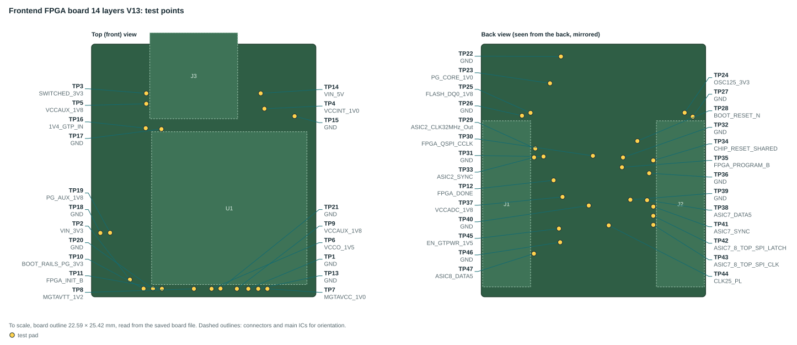
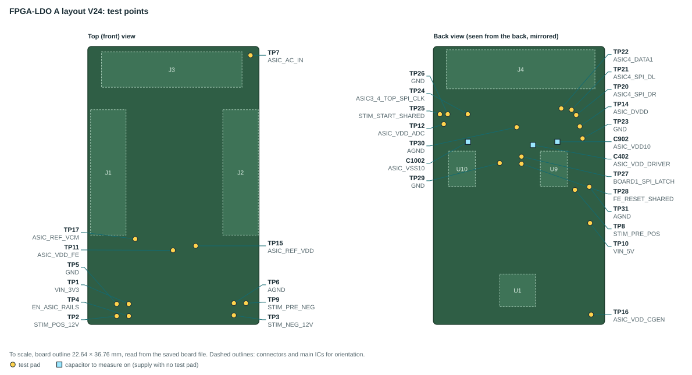

User Guide · Section B5 · Draft V1
B5First checks
Check the system one stage at a time, so that a fault shows up before it can damage the next board. To measure a voltage, set the multimeter to DC volts, touch the black probe to a ground test point (given for each stage) and the red probe to the test point being checked. “High” means close to the supply voltage of that signal; “low” means close to 0 V. Every test point is a small round bare pad, named TP and a number in the design files. The two maps below show where each one is, because the small boards have little room for printed names.


Before assembly: checking a board in its test frame. The Frontend and the FPGA-LDO board each arrive inside a test frame: a 70 × 70 mm carrier board that holds the small board by break-off tabs. Short copper traces cross the tabs to a pin header on the frame (a shrouded “box” header with pins 2.54 mm apart), and the name of each pin is printed beside it. A board can therefore be powered and checked on the bench before it is broken out of its frame. Use a bench supply with its current limit set low, and connect the ground wire first. None of this has been tried on real boards yet.
Frontend, test frame V3 (16-pin header JT1). Power goes in as 5 V on pin 13, and its return goes on pin 16. The Frontend then makes its own 3.3 V, which appears on pins 1 and 2. These two pins are an output; the frame marks them “3V3 OUT”. Do not connect a supply to pins 1 and 2 while 5 V is on. Powering the board through pins 1 and 2 with no 5 V has not been assessed, so do not do that either.
| Header pin | Printed name | What it is | You should read |
|---|---|---|---|
| 13 | 5V IN | Power input from the bench supply | 5 V (set on the supply) |
| 16 | GND | Return of the 5 V supply | 0 V |
| 1 and 2 | 3V3 OUT | The 3.3 V made by the Frontend (output of regulator U16) | 3.3 V |
| 4 | RAILPG | “All supplies good” signal (BOOT_RAILS_PG_3V3) | high (about 3.3 V) |
| 8 | INIT_B | FPGA ready to load (FPGA_INIT_B) | high (about 1.8 V) |
| 10 | VCCO | FPGA input/output supply | 1.5 V |
| 14 | VCCAUX | FPGA auxiliary supply | 1.8 V |
| 3, 5, 6, 7, 9, 11, 12, 15 | GND | Ground | 0 V |
FPGA-LDO board, test frame V4 (20-pin header J5). Power goes in as 3.3 V on pins 13 and 15, which are joined on the frame; the return goes on a GND pin. In a head, this 3.3 V comes from the Frontend.
| Header pin | Printed name | What it is | You should read |
|---|---|---|---|
| 13 and 15 | 3V3 | Power input from the bench supply | 3.3 V (set on the supply) |
| 2, 8, 14, 16, 17, 20 | GND | Digital ground; return of the supply | 0 V |
| 12 | AGND | Analog ground | 0 V |
| 6 | EN | “Start ASIC supplies” line (EN_ASIC_RAILS); pull it to ground to keep the ASIC supplies off | rises to about 3.3 V |
| 4 / 10 | +12V / -12V | Stimulation pre-supply | about +12 V / -12 V |
| 18 | -PRE | The -12 V after jumper JP2 (STIM_PRE_NEG) | about -12 V |
| 11 | VADC | ASIC supply VDD_ADC | 1.5 V |
| 19 | CGEN | ASIC supply VDD_CGEN | 1.5 V |
| 1 | AC_IN | Test-signal input shared by all eight ASICs; feed 0 to 1.5 V | – |
| 3, 5, 7, 9 | STCHB, STEN, STCLK, STRT | The stimulation control lines STIM_CHB, STIM_EN, STIM_CLK and STIM_START, which a signal generator can drive when no Frontend is fitted | low (0 V) when not driven |
Breaking a board out of its frame. Each frame says in print how to free its board. On the Frontend's frame, snap the two tabs on the south edge (the lower edge when the printed text is upright), cut the tabs on the west and east edges with a fine cutter, and file the stubs flush. On the FPGA-LDO board's frame, score both faces along the row of holes at each tab, then break the tab and file the stub flush; afterwards check that the short traces that end at the board edge do not touch each other. File the north edge of the FPGA-LDO board (the end with the ASIC ports) gently: near its north-west corner one signal line runs only 0.41 mm inside that edge for about 2.5 mm, under the solder mask.
Stage 1: HDMI Extension Board alone (no heads). Black probe on TP709 (ground, top side) or a DGND hole of J920.
| Test point | Side | What it is | You should read |
|---|---|---|---|
| TP710 | top | 12 V input | about 12 V |
| C704 pin 1 (or TP700) | top | 5 V for the heads (FE_5V) | 5.02 V |
| TP701–TP708 | back | 5 V at ports P1–P8 | about 5 V each |
| J920 holes | top | module supplies | +1.2 V, +1.8 V and +3.3 V holes read their names; VIO1 reads 1.8 V once set |
| Red LEDs D701–D708 | back | port overload | all off |
With the XEM8310 module fitted, its edge covers most of TP700. Measure the same 5 V on pin 1 of C704 or C706, the output capacitors beside U700, which stay clear of the module.
Stage 2: one Frontend alone on a cable. Black probe on TP1 or TP13 (ground, top side).
| Test point | Side | What it is | You should read |
|---|---|---|---|
| TP14 | top | 5 V arriving from the cable (VIN_5V) | above 3.6 V |
| TP2 | top | 3.3 V supply (VIN_3V3) | 3.3 V |
| TP3 | top | switched 3.3 V (SWITCHED_3V3) | 3.3 V |
| TP4 | top | FPGA core (VCCINT_1V0) | 1.0 V |
| TP5 and TP9 | top | FPGA auxiliary (VCCAUX_1V8) | 1.8 V |
| TP6 | top | FPGA input/output (VCCO_1V5) | 1.5 V |
| TP7 | top | transmitter supply (MGTAVCC_1V0) | 1.0 V (1.008 V by design; it must lie between 0.97 and 1.03 V) |
| TP8 | top | transmitter output supply (MGTAVTT_1V2) | 1.2 V |
| TP10 | top | “all supplies good” signal (BOOT_RAILS_PG_3V3) | high (about 3.3 V) |
| TP11 | top | FPGA ready to load (FPGA_INIT_B) | high (about 1.8 V) |
| TP12 | back | FPGA loaded (FPGA_DONE) | high (about 1.8 V) once the program has loaded |
To load a program into the Frontend's flash memory: on the HDMI Extension Board, turn switch SW601 OFF; turn the rotary switch SW600 to the target (position 1 = XEM8310 module, positions 2–9 = ports P1–P8); turn SW601 back on; then program over the USB-C socket J500.
Stage 3: add the FPGA-LDO A board. Black probe on TP5 (ground) or TP6 (analog ground), both on the front. The two grounds are joined on this board, so either works for these readings. The front-side pads TP1–TP6 and TP9 sit at the far end of the board and stay reachable with the Frontend plugged in.
| Test point | Side | What it is | You should read |
|---|---|---|---|
| TP1 | front | 3.3 V from the Frontend (VIN_3V3) | 3.3 V |
| TP4 | front | “start ASIC supplies” (EN_ASIC_RAILS) | rises to about 3.3 V; the supplies start 15–23 ms after power-on |
| TP2 / TP3 | front | stimulation pre-supply (STIM_POS_12V / STIM_NEG_12V) | about +12 V / -12 V |
| TP8 / TP9 | back / front | the same ±12 V after jumpers JP1/JP2 (STIM_PRE_POS / STIM_PRE_NEG) | about +12 V / -12 V |
| TP12, TP14, TP16 | back | ASIC supplies VDD_ADC, DVDD, VDD_CGEN | 1.5 V each; reachable when the head is assembled |
| TP11, TP15 | front | ASIC supplies VDD_FE, REF_VDD | 1.5 V each |
| TP17 | front | ASIC supply REF_VCM | 0.75 V |
| C402 | back | ASIC supply VDD_DRIVER (no test pad) | 1.5 V |
| C902 / C1002 | back | stimulation supplies (no test pad) | +8.06 V / -8.06 V |
TP11, TP15 and TP17 are under the Frontend. Measure them with the FPGA-LDO board powered on its own through TP1 (3.3 V from a bench supply), without the Frontend.
Stage 4: add one ASIC port at a time. After each port, check the stage 3 supplies again, and check TP14 on the Frontend. With everything running, TP14 must stay above about 3.6 V.
More test pads, for an oscilloscope. On 18 Nov 2026 the HDMI Extension Board, the Frontend and the FPGA-LDO board each received extra bare pads, so that their signals can be checked with an oscilloscope. A ground pad sits close to most of them, for the probe's ground spring. The pads were kept off the fastest lines (the cable's data, clock and command pairs), where a pad would disturb the signal.
| Board | Added pads |
|---|---|
| HDMI Extension Board V39 | 20 pads, TP720–TP739: the programming (JTAG) lines on both sides of the level shifter, the three signals that check a head's voltage before programming, the USB supply, the port-enable and power-good signals, and 8 ground pads. 18 are on the back and 2 on the top; all can be reached with the XEM8310 fitted. |
| Frontend V13 | 33 pads, TP15–TP47, which makes 47 in all. On the top: the transmitter's 1.4 V input supply (TP16), the 1.8 V power-good signal (TP19) and 5 ground pads. On the back: 17 signal pads (two supplies, three clocks, five reset, enable and status lines, one flash memory line, the settings clock and latch of ASIC7 and ASIC8, two SYNC lines and two data lines) and 9 ground pads. The back faces the FPGA-LDO board, so its pads can be reached only while the Frontend is on its own. |
| FPGA-LDO A V24 | 12 pads on the back, TP20–TP31, which makes 28 in all: three lines of ASIC4 (TP20–TP22), the settings clock of ASIC3 and ASIC4 (TP24), STIM_START (TP25), the latch of the bottom board on port J4 (TP27), FE_RESET (TP28), three digital-ground pads (TP23, TP26, TP29) and two analog-ground pads (TP30, TP31). All 12 stay reachable in an assembled head. |
The latch of the bottom board on port J3 (BOARD3_SPI_LATCH) has no test pad. Its pull-down resistor R28 is the place to probe it, and that is possible only with no ASIC board on port J4, because R28 sits under that board.
New cables: before first use, check all 19 wires for continuity with the meter.